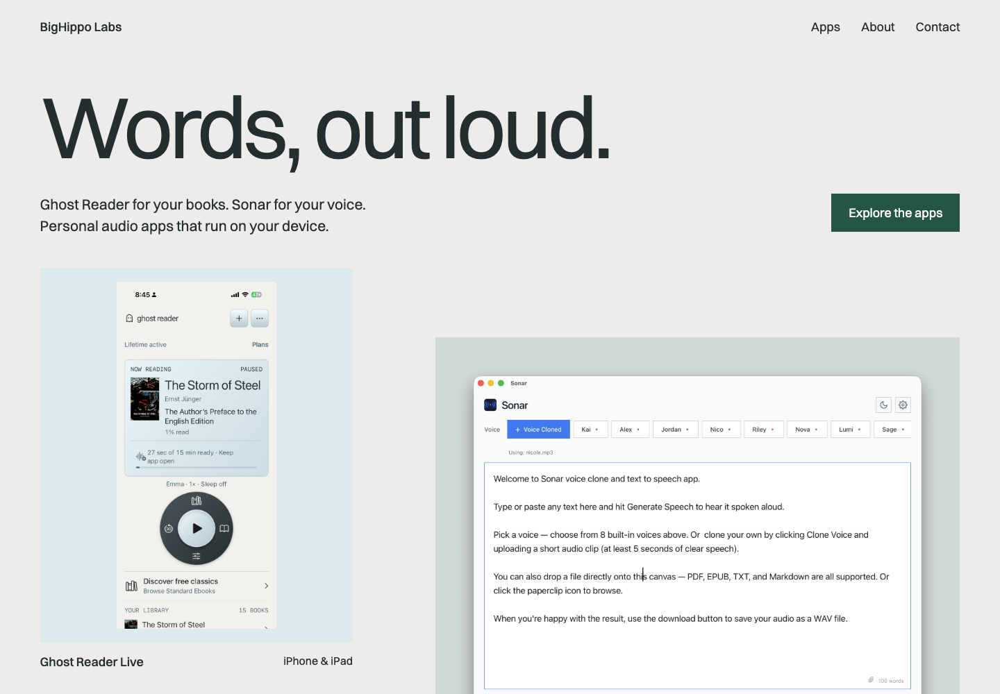
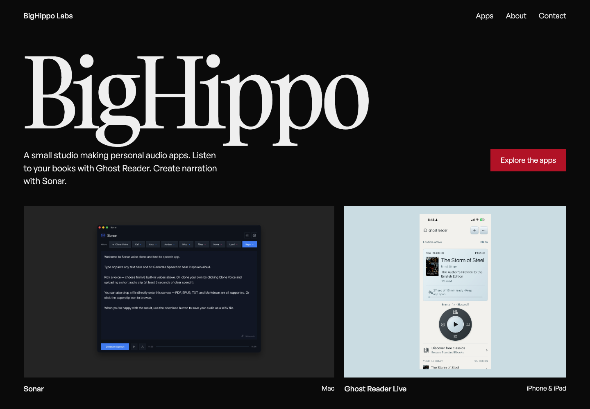
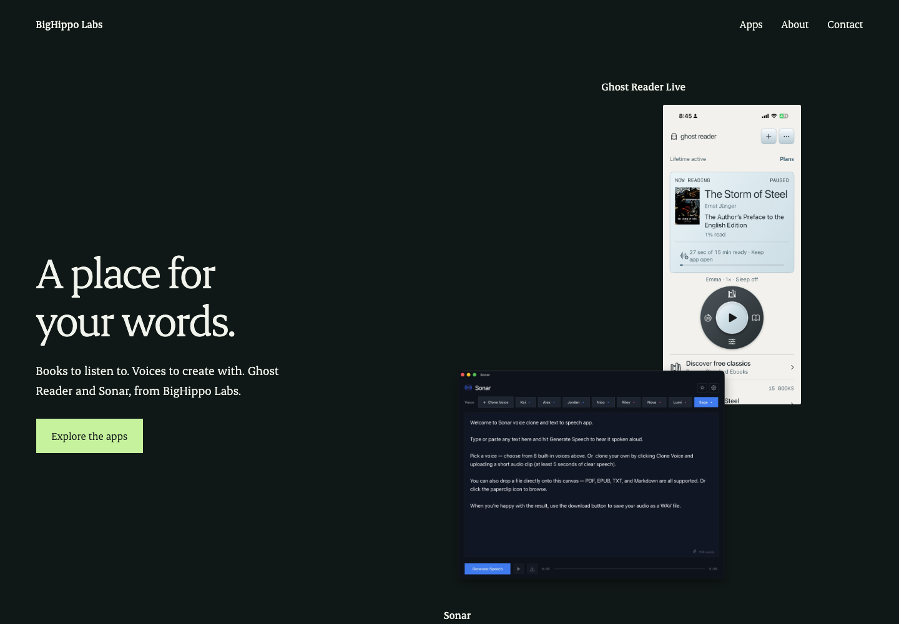
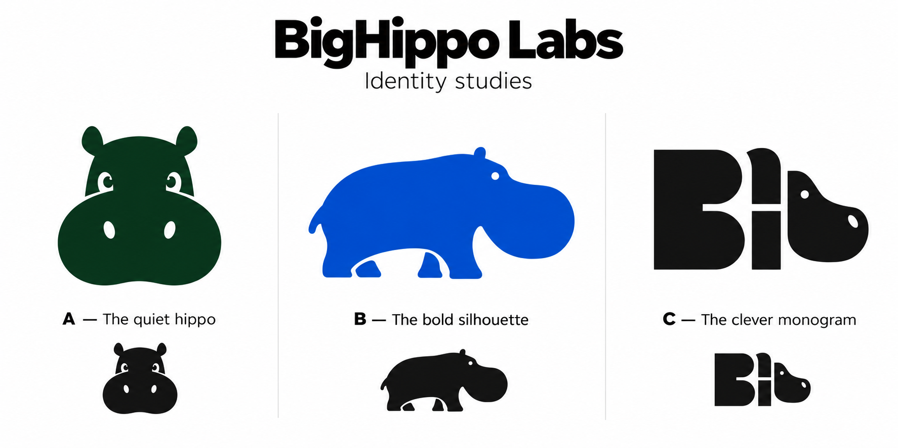
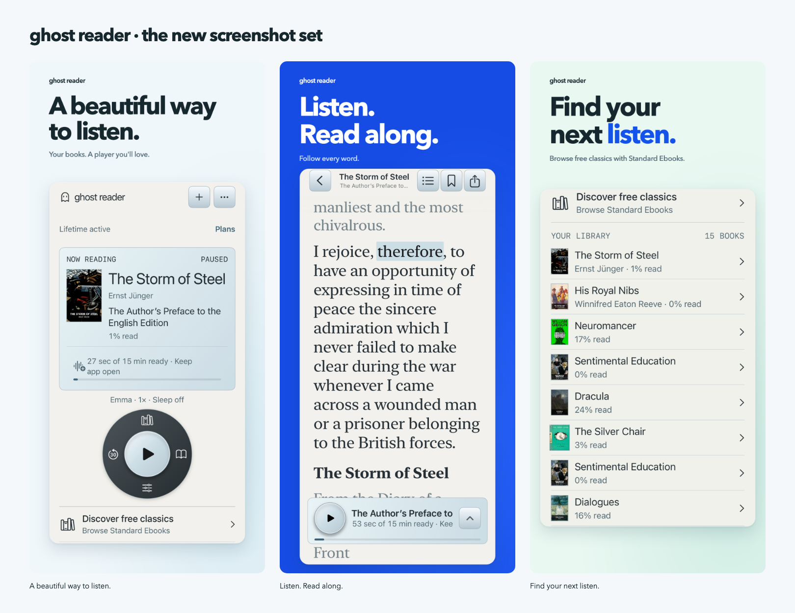
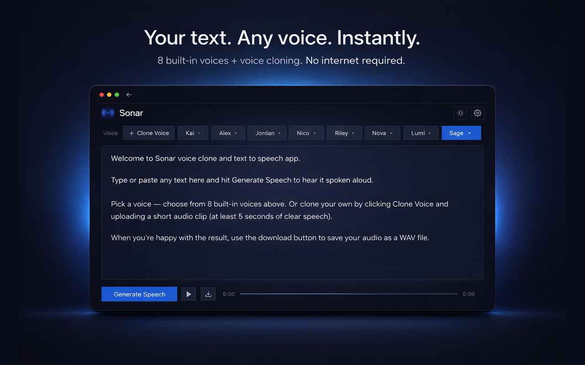

Revised: each app, its own space.
A small independent studio, followed by separate Ghost Reader and Sonar sections. This replaces the shared audio positioning below.
Earlier visual studies.
Real apps. Real screenshots. Three different personalities. These earlier studies are retained for visual reference; the revised proposal above follows the updated product separation. The live website is unchanged.
Product gallery
Earlier study. A calm, pale gallery lets the click wheel, book typography, and Sonar workspace give the site its character. The easiest direction to extend as you release more apps.
Open this direction
Big name, small studio
A big, sculptural serif wordmark makes the studio memorable. Black, off-white, and a small crimson accent give the apps a more editorial setting. Best if the BigHippo identity should lead.
Open this direction
Listening room
A forest-black gallery with expressive serif type and light app surfaces. More intimate and atmospheric. Best if you want listening and voice creation to feel like a shared world.
Open this direction
New studio icon studies
A separate identity exploration. These are new marks, independent of the previous mascot. B, the side-profile silhouette, is the recommended starting point.

What stays consistent
Plain language, visible product interfaces, clear App Store links, and room for each app to have its own identity. No invented reviews, inflated claims, or decorative AI imagery.
Source material
The October Ghost Reader campaign and existing Sonar marketing explain the visual starting point. Their app interfaces are preserved in the studies.

